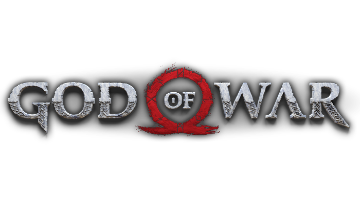
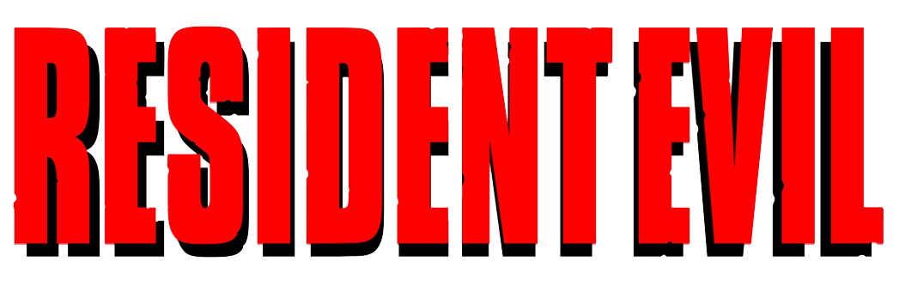
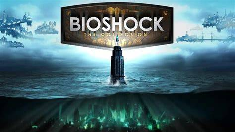
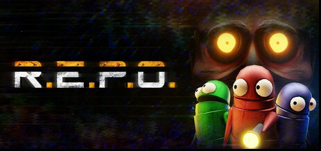
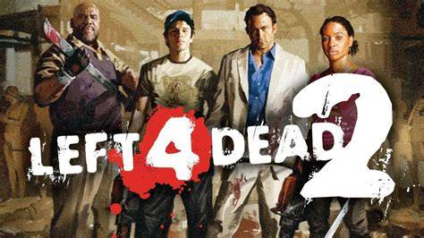

Los mejores juegos que he jugado



Los mejores juegos que he jugado |
|||||
| Saga | Año de lanzamiento | Juego | Puntuacion | Puntos a mejorar | |
 |
2018 | God of War(2018) | 10/10 | Un sistema de combate mas fluido, manera de centrar a Atreus en un objetivo, posibilidad de poder tener mas armas para el combate | |
 |
2023 | Resident evil 4 Remake | 11/10 | Pocos puntos a mejorar sobre juego, un sistema de combate, sistema de armas excelente frenetico y aterrador | |
|
2014 | Plantas vs zombies: Garden warfare | 9/10 | Mapas un poco mas emparejados para ambos equipos en modos de juego como captura la bandera, equilibrar el nivel de los jugadores en las partidas | |
Mis juegos favoritos actualmente | ||
 |
Bioshock | Bioshock es shooter que se ubica en una utopia debajo del agua que nos cuenta como una esta misma utopia una ciudad llamada Rapture donde no existen dioses ni reyes, donde los hombres pueden hacer lo que quieran, nos ubicamos años despues de la inminente caida de Rapture vemos los restos de lo que alguna vez fue un lugar hermoso ahora esta destruida donde el peligro es latente y las amenazas estan por todas partes |
 |
R.E.P.O | R.E.P.O es un juego multijugador donde nuestra mision es entrar a ciertos lugares como mansiones, museos, estaciones de investigacion que estan abandonadas, nuestra mision es recolectar cada objeto de valor que encontremos hasta llegar a un valor que nos pide el nivel para poder salir de ese lugar, los objetos tienen fisicas, peso, resisencias y cualquier golpe puede hacer perder valor a los objetos y tambien ha criaturas como monstruos que intentaran matarnos y hacernos perder |
 |
Left 4 Dead 2 | Left 4 Dead 2 Es un shooter en primera frenetico de un mundo donde azota la epidemia zombie en sus primeros dias, su premisa es simple llegar de punta A a punto B sin morir en el intento, los ozmbies aparecen por oleadas gigantes y por todas partes haciendo que avanzar sea complicado y al mismo tiempo infectados especiales con habilidades unicas intentaran acabar con nosotros, nuestra mision es atravezar los distintos escenarios para lograr escapar o ser rescatados por el ejercito |